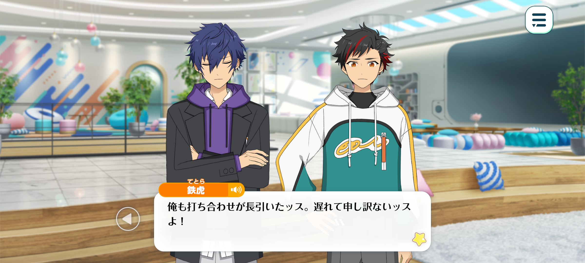
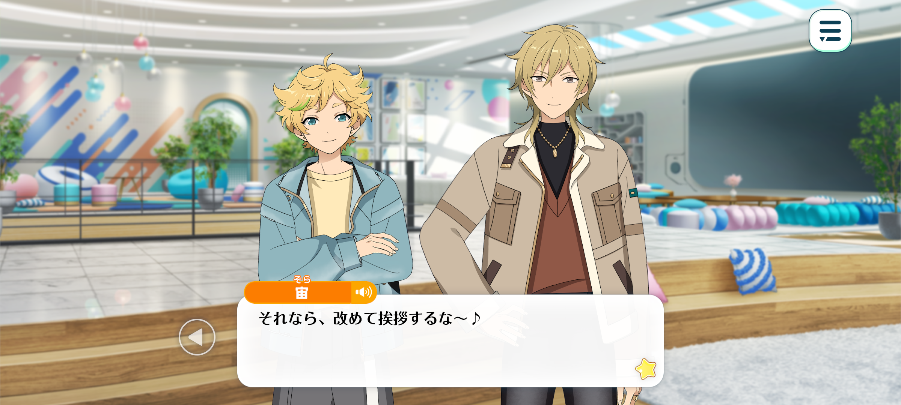
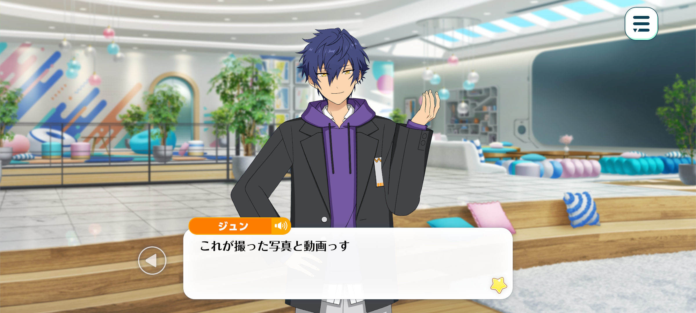

Spopo
Passion Is The Key To Appeal – Chapter 1

Time: 2 years since ES’ establishment, late October
Season: Autumn
Location: In the Starhouse Living Room

Jun: Hi, everyone. Sorry, my photoshoot ran a little over...
Tetora: Yeah, I got held up with a meeting. Sorry I'm late!
Sora: Jun-chan-senpai, Tetora-chan, hello! Sora and Hane-oniisan only just got here too~.
Kaoru: Yep, so don't worry about it. Work's work, after all!
Jun: Thanks. I was starting to worry about being late for our very first ambassador job.
Tetora: Wasn't our first job the other day, though? When we had that introductory meeting with everyone?
Jun: Ah, yeah. But that was more of a chance to get to know each other and hear what they expect from us. I don't think that really counts as our first job...
Kaoru: Well, today's when things are actually getting started, so I think it's fair to call this our first job, don't you?

Sora: Then let's all get to know each other~♪
Sora's Sora! Sora loves being active, so he's super happy to be an ambassador for Spopo~♪
Tetora: I'm Nagumo Tetora! I'm really happy to be doing something that's right up my street, too. I'll give it everything I've got!
Jun: Then, um... I'm Sazanami Jun. I'm just as excited! I'll do my best to keep everyone's spirits up around here~.
Kaoru: And I’m Hakaze Kaoru. Looking forward to working with you all.
Right then, shall we get started? We're ambassadors for Spopo, a sportswear and equipment shop—
—and for our first assignment, they've asked us to promote their new line of innerwear.
Tetora: Ossu! They haven't really given us much direction, so it's pretty much up to us to figure out what to do.
That's why we've all got together today to discuss how we're gonna promote it.
Jun: The person in charge was a little vague about things, weren’t they?
Well, they did give us the basic information we needed. I suppose they're trusting us to take the initiative.
Kaoru: They were pretty quick to get back to us, and they seem like they're on the ball. Maybe they're the sort who care more about the end result than how you get there.
Tetora: I'm starting to feel the pressure to deliver now you've put it like that... But I suppose that's just how it is for any job.
Sora: The most important part of any job is having fun~!
Hane-oniisan, are there any samples in that box? Sora wants to have a look!
Kaoru: Sure! Let's have a look, shall we...?
Sora: Waaah! Is this it~?
Jun: Whoa, these look much cooler than I expected.
Kaoru: They really do! When I first heard 'innerwear', I was picturing ordinary underwear, but you could practically wear these on their own.
Tetora: And there’s a bunch of colours to choose from. I’m gonna have to go with the black though…♪
Sora: It's so stretchy! Sora bets you can move around really easily in these! They're perfect for sports!
Kaoru: Ahaha. Looks like there's something here for everyone.
There’s some documents with some information here about the prices, sizes, materials, and things like that.
So, shall we start coming up with some ideas? Anyone got anything?
Jun: Hmm…
When it comes to advertising clothes, I think most brands usually get models to wear them for photoshoots, then post the pictures on social media or their official websites.
Tetora: That'd probably be the easiest way to go about it.
So we'd need someone to wear the clothes, and someone else to take the photos and videos.
Jun: Sweet. I'll handle the filming.
Kaoru: Thanks! Anyone up for some modelling...?
Sora: Hane-oniisan would look super cool wearing it~♪
Kaoru: Ahaha, thanks. Well, in that case, I'll give it a go.

Jun: Here are all the videos and photos I took.
Tetora: Lemme see…
Sora: Hane-oniisan looks so cool!
Tetora: Right! It really suits you man, you look great!
Kaoru: Fufu, thanks for all the lovely compliments.
Although... I'm not sure these photos alone would be enough to convince anyone to buy the clothes.
Jun: Hmm, you might have a point... You do look pretty good, though.
I imagine people who are already fans of Hakaze-senpai, or who really like the look of the designs, would be tempted to buy them straight away.
But this is such a standard way of advertising clothes that I don't think it'll do much to convince anyone who isn't already interested.
Tetora: Yeah, I was thinking the same thing. Loads of businesses go about it this way, so it's not like we'd be doing anything particularly different.
I reckon we should try and come up with some other ideas first. If nothing comes to mind, we can always fall back on this.
That said, coming up with something completely new isn't exactly easy...
Sora: This is tricky~. Sora can’t think of anything either!
Kaoru: ...It might be a bit much to expect us to come up with something brilliant straight away. I mean, we're brand ambassadors, but outside of work, we're just ordinary consumers like everyone else.
Maybe that's how we should approach it, then. Think about it from the customer's point of view. What usually makes you want to buy something?